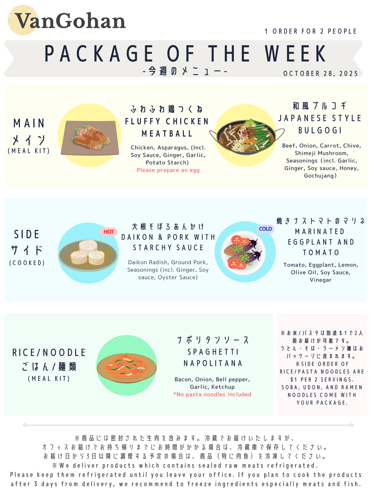

VanGohan Recipe: Week of 2024-06-17
Addictive Chicken
Things you need to prepare
- Cooking oil
- Salt and pepper
Instructions
- Marinate Chicken with Seasoning① for 10 mins
- Cook chicken with cooking oil on medium heat for 3-5 mins
- Add vegetables and cook them for 3-5 mins, and add salt and pepper and Seasoning① used for marinating, then cook until chicken is well cooked
Cauliflower Cream Pasta Sauce
Things you need to prepare
Instructions
- Boil pasta with salt
- Toss the pasta well with heated pasta sauce
- Please adjust the taste with water that boiled pasta, milk and/or pepper
- 160g to 200g pasta before boiled are for 2 people
Hashed Beef Rice
Things you need to prepare
- Cooked Rice
- Cooking oil
- 250ml water
Instructions
- Coat beef with flour then stir-fry it on a pan with cooking oil on medium heat
- Remove beef from the pan when browned, then cook onion and mushroom
- Add Seasoning③ and cook a few mins, add 250ml water until boiled, then put back the beef
- Add and cook Seasoning④ on low heat
- When the sauce is thick, put butter. Pour the sauce on rice (Adjust the taste with salt if needed)
